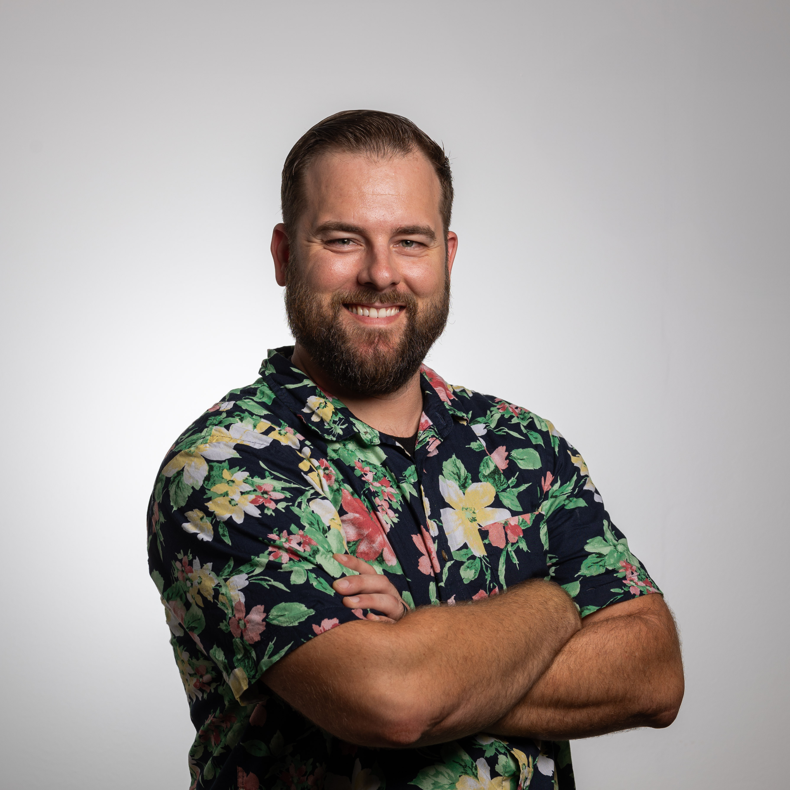

Mark Atkins

Summary
I am a senior software engineer and architect with expertise in production
machine learning systems. I am especially interested in building scalable,
resilient, and efficient ML systems; automating services and deployments;
and delivering value through these solutions. Fluent in English and German
Technologies and Languages
- Languages: Python, Rust, SQL, Javascript, Go
- Technologies: GCP, Azure, Pytorch, Docker, REST
-
Other: MLOps, CI/CD, ML and Data Platform Engineering, API
Design, Generative AI
Experience
Analytics Platform Architect - Red Bull
2024 - Present
-
Responsible for design and implementation of Sports Data Platform
serving four professional soccer teams, two ice hockey teams, and a
cycling team
-
Leads the architecture, design, and implementation of data engineering
solutions and analytics platforming for consumer data products
-
Provide Generative AI expertise and application support to various Red
Bull corporate projects
-
Project management, vendor management, budget planning, and lifecycle
management for data and AI projects within Red Bull Corporate Projects
Senior Software Engineer - GlaxoSmithKline
2022 - 2024
-
Designed and implemented a model serving framework in Rust to inference
Pytorch models and reduce latency by 80%
-
Built and supported systems for training, deployment, and monitoring of
Large Language Models
-
Led the design and implementation of centralized model registry and
experiment tracking systems for ML teams, scaled to 30+ teams of users
-
Developed a system for running on-premises and cloud-based model
training jobs from a single API with metadata, reproducibility, and
monitoring
-
Architected model template repositories and pipelines enabling teams to
seed new projects with out-of-the-box functionality for continuous
integration and deployment which reduces boiler plate and project setup
by 90%.
-
Deployed and monitored machine learning models and data pipelines for
real-time medical and research applications using Prometheus/Grafana/ELK
stack
-
Managed data pipelines and machine learning pipelines for complex
image/video applications
Machine Learning Architect - Freeport McMoRan
2021 - 2022
-
Led a team of five engineers and developers in the design and
implementation of end-to-end Machine Learning and Data Science systems
-
Built a scalable centralized ML platform MLOps platform to serve a high
volume of transactions in batch and real-time powered by Azure
Kubernetes Service
-
Led a project build a recommender system to optimize Molybdenum
production, resulting in a $21MM/yr increase in production value
-
Managed Data Scientists, consultants, and Data Engineers through data
science workflow from data collection and ingestion to model
deployment/monitoring
Machine Learning Engineer - Deloitte
2020 - 2021
-
Implemented machine learning algorithms for practical business
solutions, including time series forecasting for improved budget
accuracy for the State of New York
-
Deployed ML/AI solutions on cloud platforms, specifically Google Cloud
AI Platform
Performance Metrics Branch Lead - Undersea Warfighting Development Center
2017-2020
-
Provided data-driven assessment of large-scale naval exercises and
operations, developing quantitative analysis of naval operations
Submarine Officer - United States Navy
2014 - 2017
Education and Certifications
- M.Sc. Business Analytics - University of Nebraska
- B.Sc. Computer Science - United States Naval Academy
GitHub
LinkedIn